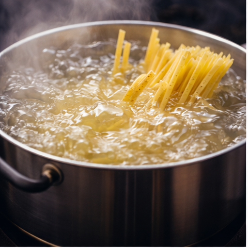
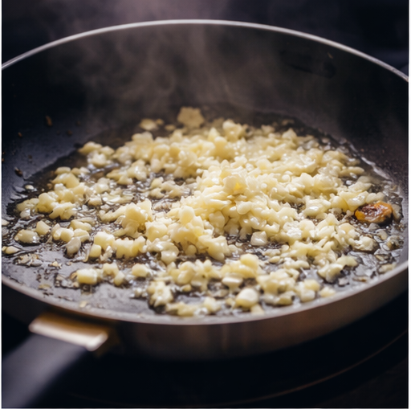
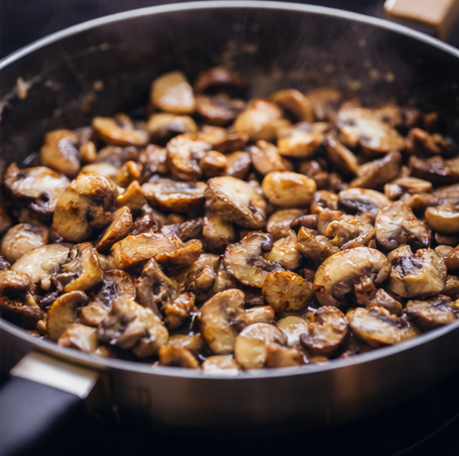
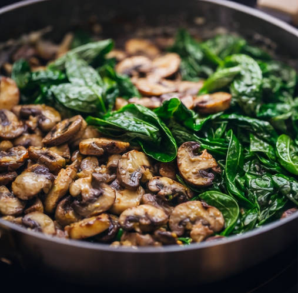
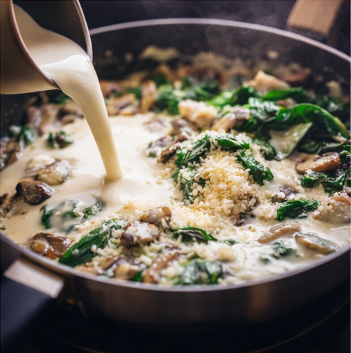
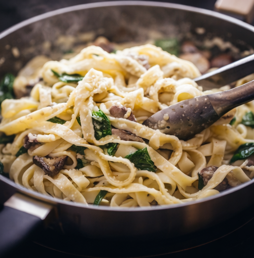

Creamy Spinach & Mushroom Pasta is the perfect combination of comfort and elegance on a plate. This dish brings together tender pasta coated in a rich, velvety cream sauce, balanced beautifully with the earthy flavor of sautéed mushrooms and the freshness of vibrant green spinach. Every bite is smooth, flavorful, and deeply satisfying – making it an ideal choice for cozy dinners, quick weekday meals, or even a simple yet impressive dish for guests.

The magic of this recipe begins with perfectly cooked pasta, boiled until al dente so it holds its shape while absorbing the creamy sauce. In a separate pan, onions and garlic are gently sautéed in butter and olive oil, releasing a warm, inviting aroma that fills the kitchen. Fresh mushrooms are then added and cooked until golden brown, bringing a rich, savory depth to the dish. As the mushrooms soften and caramelize slightly, they create a beautiful base for the sauce.
Fresh spinach is folded in next, wilting gently into the mixture and adding both color and nutritional value. The vibrant green leaves contrast wonderfully with the creamy white sauce, making the dish as visually appealing as it is delicious. The sause itself is prepared using fresh cream and a touch of milk, simmered slowly until it thickens into a silky texture. Grated parmesan cheese melts into the sauce, enhancing the flavour with a subtle saltiness and nutty richness.





When the cooked pasta is tossed into this creamy mixture, it becomes fully coated, allowing the flavors to blend perfectly. The final touch is a sprinkle of freshly ground black pepper, chili flakes for gentle heat, and chopped parsley for freshness.
What makes Creamy Spinach & Mushroom Pasta special? It can be enjoyed as a wholesome vegetarian meal, or easily customized with grilled chicken, prawns, or roasted vegetables. It pairs beautifully with garlic bread, toasted baguette slices, or a light green salad on the side.
This dish is not only delicious but also nourishing, offering a comforting balance of carbohydrates, healthy fats, and plant-based nutrients from spinach and mushrooms. Whether served on a quiet evening at home or as part of a dinner gathering, Creamy Spinach & Muchroom Pasta is a timeless recipe that delivers warmth, flavour, and satisfaction in every forkful.
Comment
"I tried this pasta yesterday and it turned out so creamy and flavorful. The mushrooms added such a rich taste. My whole family loved it."
"Thank you so much, Priya! I'm so happy your family enjoyed it. Mushrooms really do make the sauce extra special ❤️"